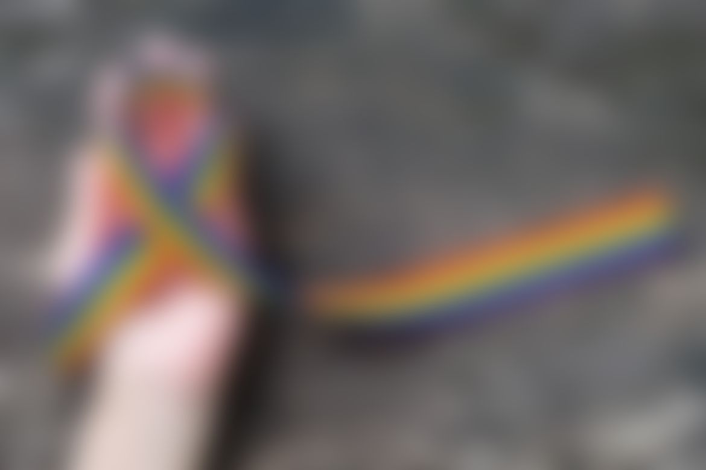
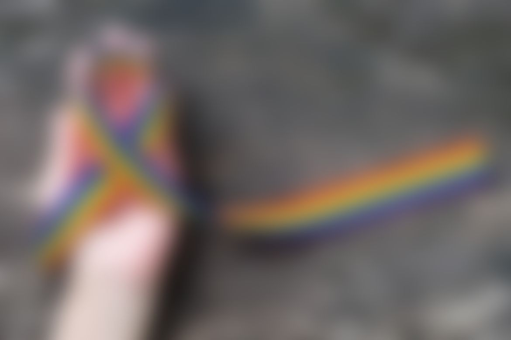

 KC Dirt Community Race Aid Stations
KC Dirt Community loves to support fellow runners and trail running organizations! We provide aid station assistance at a number of races every year. Our regular aid stations include the Trail Nerds' Psycho Wyco Run Toto Run in February and Psycho Psummer in July, as well as the Lawrence Trail Hawks' Hawk 100 in September. Please check our Facebook page for announcements regarding KC DIrt Community volunteer opportunities.